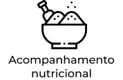
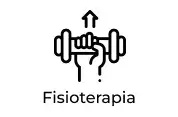
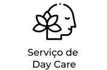
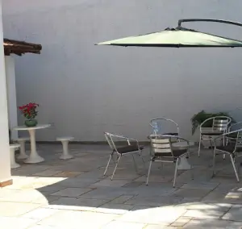
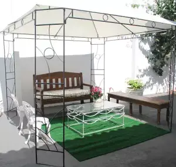
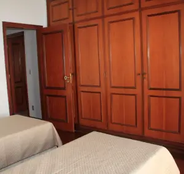
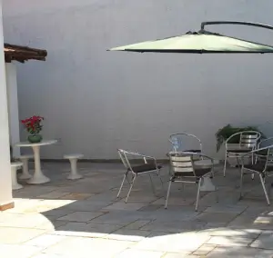
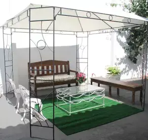
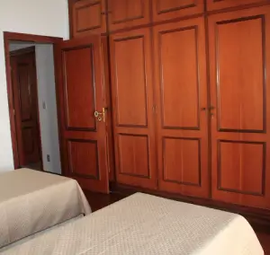

Tudo começou em 2014, com a necessidade de cuidar de uma mãe e a insegurança de colocá-la em um local que não oferecesse a atenção e cuidados necessários para proporcionar seu completo bem-estar, já que a mesma se encontrava profundamente debilitada, pois possuía Alzheimer em grau avançado.
Portanto, a partir desta necessidade, a filha mais nova de Lúcia, Cacilda Castro, determinada a cuidar da mãe da melhor maneira possível, abre a Casablanca Residence com o objetivo de proporcionar os melhores últimos anos de vida para a mãe, que faleceu na instituição.
Hoje, Cacilda Castro soma forças com seu filho Rhiad Castro Saba para continuar a missão de cuidar de cada hóspede residente como se fossem da própria família, perpetuando este legado de amor, carinho e zelo.



 






Modalidade em que a hóspede desfruta de todas as refeições, atividades e serviços ofertados pela Casablanca durante sua permanência, possuindo leito próprio e vivendo integralmente dentro da instituição, recebendo acompanhamento multiprofissional especializado 24h por dia para melhor atender suas necessidades e proporcionar uma melhor qualidade de vida.
INDIVIDUAL OU COMPARTILHADAModalidade em que a hóspede desfruta de todas as refeições, atividades e serviços ofertados pela Casablanca naquele dia, porém não residem conosco e não possui leito próprio, permanecendo sob nosso cuidados durante o período de estadia, que se inicia às 10:00h e encerra às 17:00h.
SEGUNDA À SEXTADAS 10:00 ÀS 17:00
Av. Carlos Consoni, 260 - Jardim Canadá, Ribeirão Preto - SP, 14024-270
Telefone: (16) 3441-4260
Celular: (16) 99334-3745 @Casablancaresidence
Celular: (16) 99334-3745 @Casablancaresidence